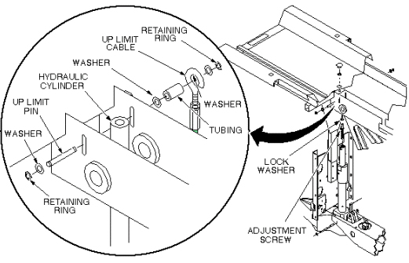
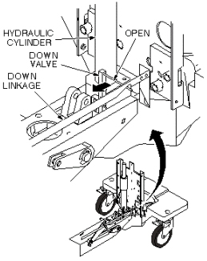
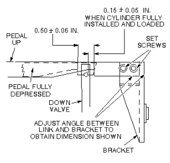
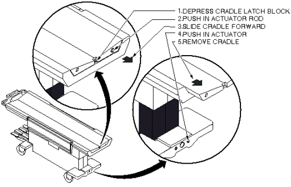

Operating Documentation
Direction 5133330-3, Rev# 14
Signa EXCITE HD 3.0T Service Methods
Module Version 2.0, Version Date 11/6/08
Operating Documentation |
| Required Persons | Preliminary Reqs | Procedure | Finalization |
|---|---|---|---|
| 1 |
| ||||
| PERSONAL INJURY POSSIBILITY! | ||||
| WHEN PERFORMING MAINTENANCE ON THE TABLE IN ITS UP POSITION, SEVERE PERSONAL INJURY CAN OCCUR IF TABLE IS ACCIDENTALLY IS LOWERED DURING MAINTENANCE PERFORMANCE. | ||||
| ENSURE THAT THE LOCK BAR IS SAFELY IN PLACE. |
Undock patient transport, and move it out of exam room.
Remove both outer covers by removing mounting screws (see Illustration 11).
Remove both inner covers by removing mounting screws.
Remove cradle assembly (see Illustration 12.
Raise table to up position.
| ||||
| PERSONAL INJURY POSSIBILITY! | ||||
| WHEN PERFORMING MAINTENANCE ON THE TABLE IN ITS UP POSITION, SEVERE PERSONAL INJURY CAN OCCUR IF TABLE IS ACCIDENTALLY IS LOWERED DURING MAINTENANCE PERFORMANCE. | ||||
| ENSURE THAT THE LOCK BAR IS SAFELY IN PLACE. |
Unhook lock bar spring, and lower bar to horizontal position, as shown in Illustration 1, then lower table until lock bar fully supports table top.
Illustration 1: PATIENT TABLE LOCK BAR

Remove plug from patient transport (see Illustration 2).
Remove retaining ring from end of adjustment screw.
Remove retaining ring, washer, and Up Limit cable attachment pin. Then remove tubing and washer. All are in Illustration 2.
Illustration 2: PATIENT TABLE HYDRAULIC CYLINDER REPLACEMENT

Remove Up Limit cable attachment pin that extends through hydraulic cylinder.
| NOTE: | The hydraulic cylinder cannot be pressed unless the Down valve is opened. See Illustration 7. |
Manually press hydraulic cylinder down until it is fully retracted.
Disconnect two hydraulic lines from base of hydraulic cylinder, and fasten upward and aside to avoid excess spillage. Immediately fold and clamp the translucent (yellow) hose to prevent oil from draining from the reservoir (see Illustration 3).
Remove retaining ring from either end of cylinder mounting pin at base of cylinder assembly (see Illustration 3).
Illustration 3: REMOVAL OF HYDRAULIC CYLINDER

Remove cylinder mounting pin from base of hydraulic cylinder.
Carefully move linkage to free actuation pin on Down valve (see Illustration 4).
Remove hydraulic cylinder from base of table assembly.
Prepare replacement cylinder for installation by pressing cylinder to its fully retracted position.
| NOTE: | It may be necessary to move linkage to fit actuation pin of Down valve into groove of linkage, as shown in Illustration 4. |
Illustration 4: DOWN VALVE ACTUATION PIN

Carefully set cylinder in base of table, taking care not to bend actuation pin on Down valve.
Insert cylinder mounting pin securing base of hydraulic cylinder to frame of table (see Illustration 3).
Insert retaining ring.
Connect two hydraulic lines to base of hydraulic cylinder.
Insert adjustment screw into top of hydraulic cylinder (see Illustration 5).
Insert lock washer on adjustment screw.
Position hydraulic cylinder so that top of adjustment screw is aligned with hole in table (see Illustration 5).
Pump up cylinder until table goes up slightly.
Insert retaining ring at top of adjustment screw to secure cylinder to table (see Illustration 5).
Insert Up Limit cable attachment pin through hole in hydraulic cylinder (see Illustration 5). Do not attach the cable at this time.
Illustration 5: PATIENT TABLE HYDRAULIC CYLINDER REPLACEMENT
Pump table up to the top of its travel.
Attach washer and tubing to Up Limit cable attachment pin.
Attach cable to end of Up Limit pin, and secure with washer and retaining ring. Adjust length if necessary to install, and to remove any slack.
Ensure that lock bar is at its vertical (Unlocked) position as shown in Illustration 6, with the lock bar spring secured.
Illustration 6: PATIENT TABLE LOCK BAR
Partially open bleed screw on hydraulic cylinder until no air is visible (see Illustration 7).
Illustration 7: HYDRAULIC CYLINDER DOWN VALVE

Open Down valve and lower table to its lowest position.
Hold Down valve open and exercise Up Pump foot pedal. This bleeds the hydraulic system by shunting air to the hydraulic reservoir.
Bleed the cylinder again by partially opening bleed screw, when table is fully up, until no air is visible.
Refer to procedure for Table Top Height Adjustment; perform those procedures, then perform the following steps.
Fill table reservoir so that fluid is 1/4 to 1/2 inch above full line when table is at its lowest position (see Illustration 8).
Illustration 8: PATIENT TABLE RESERVOIR FILL LEVEL

Check Down valve linkage adjustment as shown in Illustration 9. Obtain desired tolerance between Down valve linkage and bracket by adjusting two set screws on bracket.
Illustration 9: DOWN VALVE LINKAGE ADJUSTMENT

Replace plug in top of table (see Illustration 10).
Illustration 10: PATIENT TABLE HYDRAULIC CYLINDER REPLACEMENT
Replace inner and outer covers. Note position of Signa logo on outer covers and position toward front of table (see Illustration 11).
Illustration 11: REMOVAL OF PATIENT TABLE COVERS

Replace cradle assembly (see Illustration 12).
Illustration 12: PATIENT TRANSPORT CRADLE REMOVAL

No finalization steps.